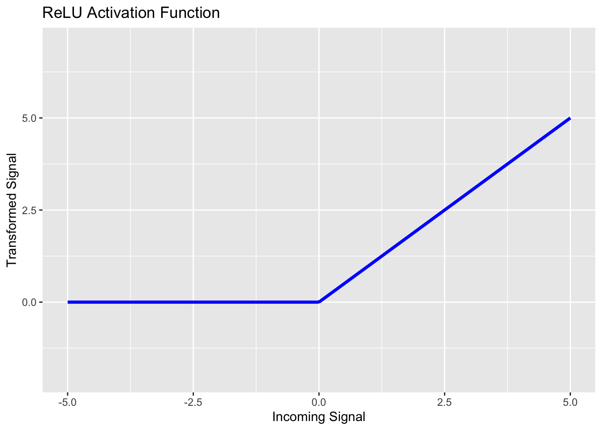
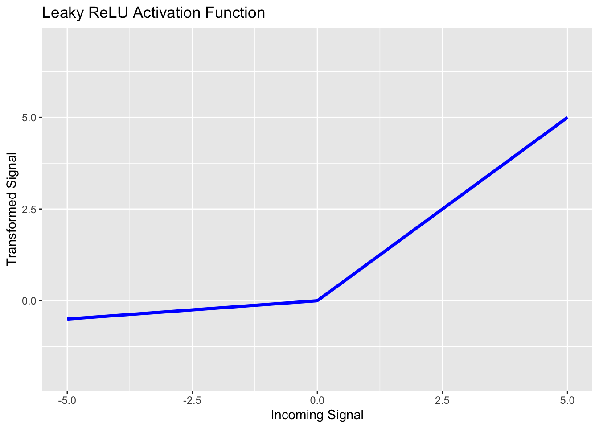
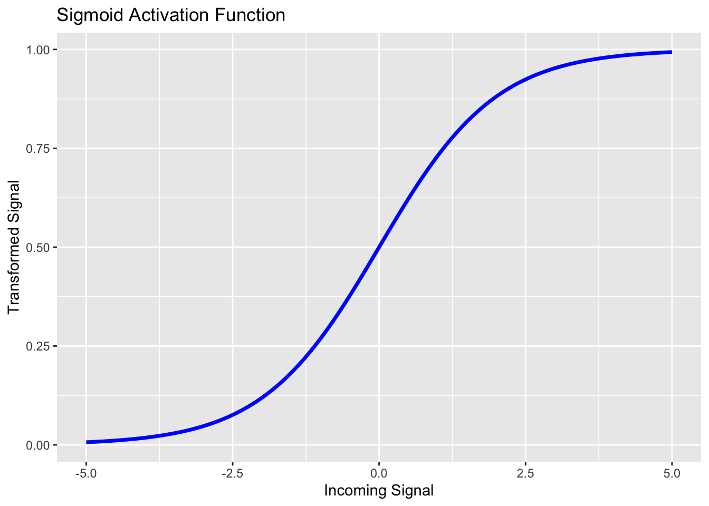
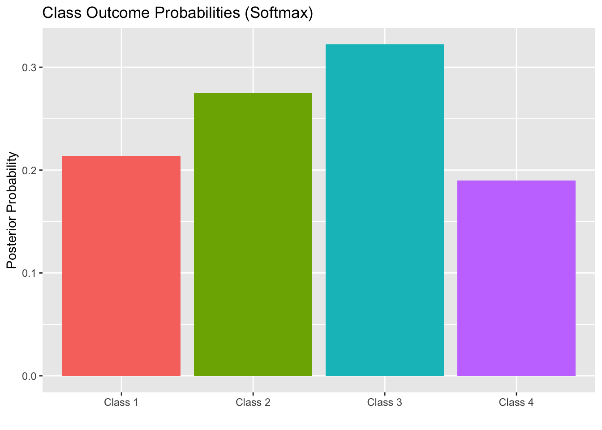

Deep Learning: Activation Functions
Purpose: This notebook covers several common activation functions for use in deep learning networks. In particular, we will discuss:
- Why not linear activation?
- ReLU
- leaky ReLU
- sigmoid
- softmax
There are other classes of activation function as well. This subset will give you activation functions that can be used across regression, classification, and other applications as well.
What is an Activation Function?
Simply put, an activation function is a transformation of the signal entering a neuron in a neural network. The idea here is analogous to the way neurons in the human brain will (or won’t) respond to stimuli – neurons will only fire if exposed to a stimulus that exceeds a certain threshold. Activation functions allow this behavior to be mimicked in neural networks.
Choices for Activation Functions
The choice of activation function can have profound effect on the performance of a neural network. While we can tune networks over several activation functions, tuning a network takes significant time and compute power, so building some intuition for when a particular activation function may be effective (or not) is quite helpful. In the subsections ahead, we’ll introduce several classes of activation function and describe scenarios where you might use them.
Why Not Linear Activation Functions?
We’ll have a larger discussion on this in class, but if linear activation functions are used, then the neural network will collapse down to a single-layer network. That is, the network may as well be a linear regression model!
As a small example, consider a neural network with two input features \(x_1\) and \(x_2\), no hidden layer, and a linear activation function \(\gamma_0 + \gamma_1\cdot x\) applied prior to predicting a response. Assume that the weight of the bias is \(\beta_0\), and the weights attached to \(x_1\) and \(x_2\) respectively are \(\beta_1\) and \(\beta_2\).
The signal being sent to the activation node prior to prediction then would be \(\beta_0 + \beta_1x_1 + \beta_2x_2\). Now, applying the activation function to this, we would obtain a predicted response of
\[\begin{align*} \text{act}\left(\beta_0 + \beta_1x_1 + \beta_2x_2\right) &= \gamma_0 + \gamma_1\left(\beta_0 + \beta_1x_1 + \beta_2\right)\\ &= \gamma_0 + \gamma_1\beta_1 + \gamma_1\beta_1x_1 + \gamma_1\beta_2x_2\\ &= \theta_0 + \theta_1x_1 + \theta_2x_2\end{align*}\]
where \(\theta_0 = \gamma_0 + \gamma_1\beta_0\), \(\theta_1 = \gamma_1\beta_1\), and \(\theta_2 = \gamma_1\beta_2\). Note that the end result is still equivalent to a linear regression model. The same would occur even on a larger network if all activation functions were linear. For this reason, we’ll need to utilize non-linear activation functions.
The only time a linear activation might be utilized is for the output layer of the network. In particular, this is a reasonable choice for regression applications.
The Rectified Linear Unit (RELU)
The rectified linear unit (ReLU) activation function is nonlinear activation function with piecewise-linear components. If the signal incoming to a neuron is a negative value, ReLU transforms the signal to \(0\). While if the incoming signal is non-negative, then ReLU leaves it alone. You can see ReLU in the plot below.
ReLU activation functions are common choices for neurons in the hidden layers of a network. This is because ReLU is computationally efficient (allowing quick convergence of network weights) and it is a non-linear function. A disadvantage to using ReLU is that when input values are near \(0\) or are negative, then the derivative (gradient) becomes \(0\) and then the network is unable to learn. This is sometimes called the dying ReLU problem.
Remember – all of our models are attempting to minimize some loss function. Calculus tells us that minimization can be done by taking steps in the opposite direction of the steepest gradient. If the derivative/gradient is \(0\), then we are on flat ground and will not move.
Leaky ReLU
One way to get around the dying ReLU problem is to not map all negative signals to \(0\). Instead, we should just shrink them towards \(0\) with a small scaling parameter. A common scaling parameter is \(0.01\), but we can tune this scaling parameter as a model hyperparameter. That is, leaky ReLU takes the form: \(\displaystyle{f_{\alpha}\left(x\right) = \left\{\begin{array}{rcl} \alpha\cdot x & ; & x < 0\\ x & ; & x \geq 0\end{array}\right.}\). We can see the leaky ReLU activation function with \(\alpha = 0.1\) below.

The difference between ReLU and Leaky ReLU seems quite minimal. However, a big advantage is that the derivative of the Leaky RELU activation function is never identically \(0\). This ensures that back-propagation for updating the network weights will actually result in changes to those weights.
Sigmoid
We encountered sigmoid functions earlier in our course. Logistic regression models were sigmoid functions. Perhaps unsurprisingly then, sigmoid activation functions are good choices for the output layer of a neural network being applied to a binary classification problem. The sigmoid activation function takes the form \(\displaystyle{f\left(x\right) = \frac{e^x}{1 + e^x}}\), and you can see it in the plot below.

Softmax
While sigmoid functions are useful for binary classification, the softmax class of functions can be utilized to calculate a probability distribution over \(k\) different outcome classes. For this reason, softmax activation functions are a great choice for the output layer of a neural network applied to a multiclass classification problem.
The softmax function takes a vector of values as inputs – you can think of the components as the sigmoid likelihood of outcome class \(c_i\) in a one-versus all prediction. The softmax function also outputs a vector of values – that is the probability distribution across the \(k\) available output classes. Let \(\displaystyle{\vec{z} = \left[\begin{array}{c} z_1\\ z_2\\ \vdots\\ z_k\end{array}\right]}\). Then, we define \(\displaystyle{\sigma_i\left(\vec{z}\right) = \frac{e^{z_i}}{\sum_{j = 1}^{k}{e^{z_j}}}}\) to be the probability of the input record belonging to class \(c_i\). You can think of the output of the softmax function as a bar graph with the heights of the bars corresponding to the predicted class probabilities for the record. The class corresponding to the tallest bar will be the most likely class for that record. The resulting “bar graph probability distribution” will be different for each input record.
For example, we might have a record corresponding to \(\displaystyle{\vec{z} = \left[\begin{array}{c} 0.2\\ 0.45\\ 0.61\\ 0.08\end{array}\right]}\). Then we’ll have \(\displaystyle{\sum_{j = 1} ^{4}{e^{z_k}} \approx 5.71}\). This will give \(\displaystyle{\sigma\left(\vec{z}\right) = \left[\begin{array}{c} 0.2139\\ 0.2747\\ 0.3223\\ 0.1897\end{array}\right]}\). The class membership probabilities output by softmax can be visualized in the bar plot below.

We can see here that Class 3 is the most likely class for this record.
Summary
In this notebook we introduced four different activation functions which can be used in neural networks.
- ReLu and Leaky ReLu activation functions are typically used on hidden layers of networks. The Leaky ReLu activation function can be substituted for ReLu if we encounter poor performance due to neurons dying because of negative input signals.
- The sigmoid activation function is a common choice for the output layer of a network applied to a binary classification problem.
- The softmax activation function is a common choice fo the output layer of a network corresponding to a classification problem where the response includes more than two classes.
- If a network is being built to solve a regression problem, then a linear activation function may be used as the activation for the output layer of the network.